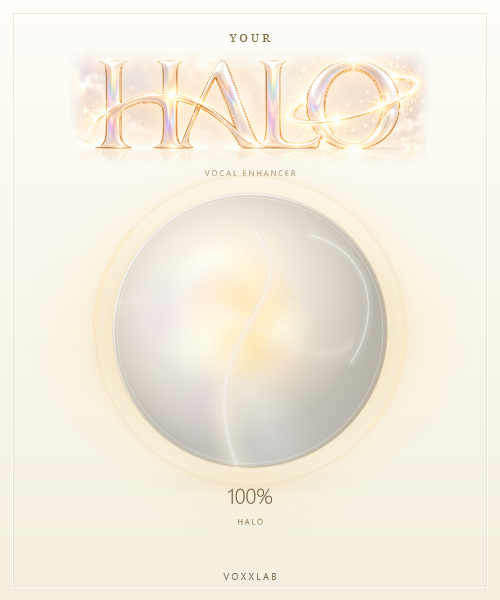

A sphere filled with circulating light.
Actual JUCE captures at HALO 100% with normal input. Play the 24-second animation to see the upgrade in motion.
 Previous refinement
Previous refinement
New internal circulation and moving reflectionBuild, preservation and performance report